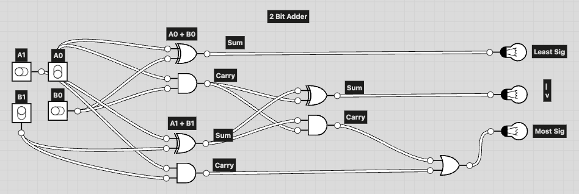
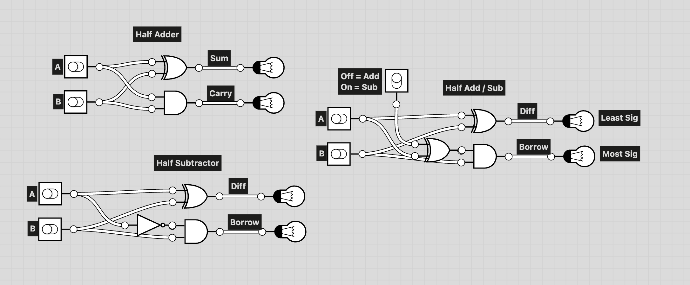
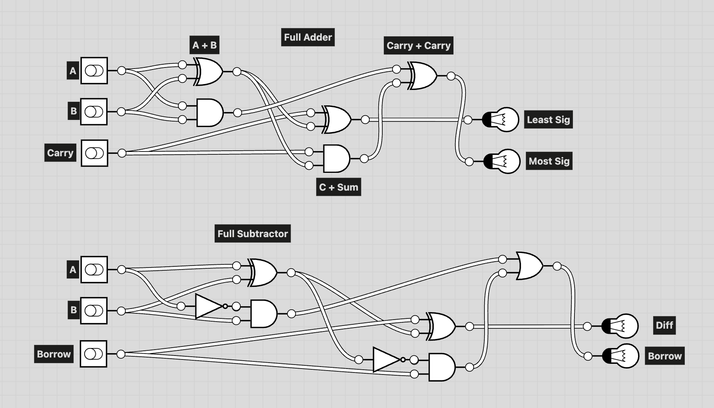
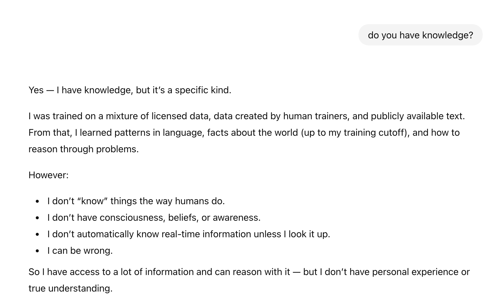
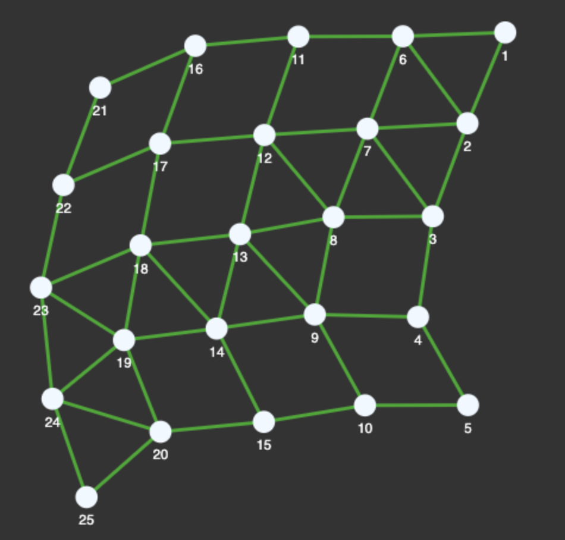
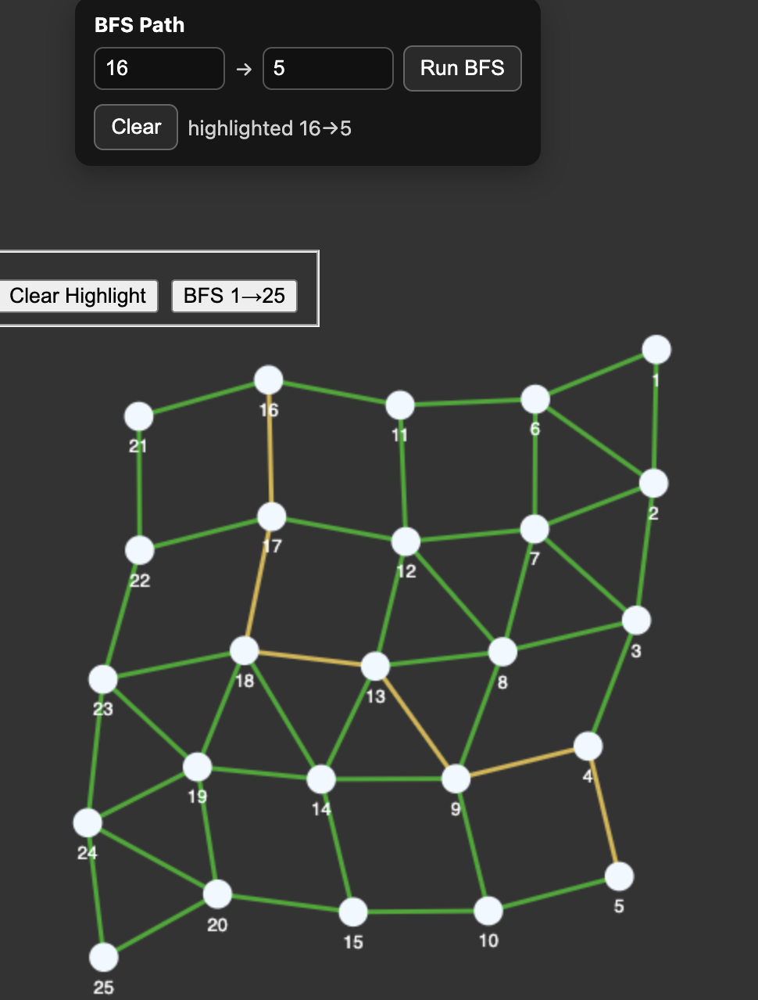
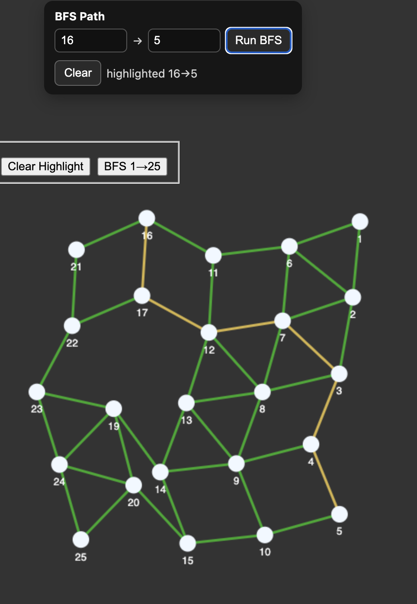
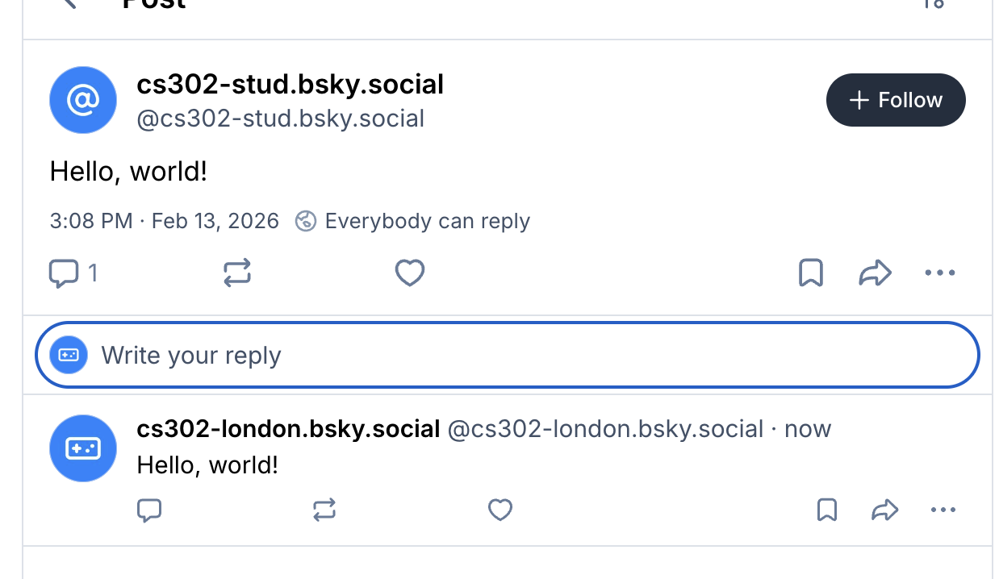

This project page is under construction.
Currently blank project page

This is my 2-bit adder design. It was created/ build upon half adders and full adders that can be seen be seen here.

This shows my diagram of a half adder, half subtractor, and a combination of the two circuits using an input reverse system.

This is my full adder and subtractor. The full adder is built from two half adders and an XOR to handle the carry bit. The full subtractor is made from two half subtractors and an OR gate which handles the borrow bit.
The 2-bit adder is made from a half adder connected to a full adder. The half adder adds bits A0+B0 and outputs Sum0 and Carry0. Full adder takes in A1+B1 and Carry0 and outputs Sum1 and Carry1
We spent a lot of time talking about the discussion question "It something is not capable of computing, can it still be a computer?" and the branching thought processes connected to it. We discussed if broken computers (which can't currently compute) are computers or not, and if not, then is a computer that is out of battery no longer a computer? If a broken computer is still a computer, then at what point is it so broken that it is no longer one? Someone in class asked if a rock was a "broken computer" or might be a computer whose potential has yet to be realised.
Another train of thought we went down related to that question, was does the "computer" need to be able to "compute" on its own. What does input look like for a computer, and does it change the fact that it is a computer or not. Klaus brought up the "choose your own adventure" example. Its interesting to think if that is a computer or not. In essence, it is a set of instructions that could be structured in a way to "compute" but it relies on a human as input, and it can't compute on its own. What if instead there was a physical computer, one powerd by marbles? That (if we ignore the human putting the marbles in place) is a machine that can compute "on its own". What if the input is electricity? Everyone seems to agree that electricity is an acceptable input for a computer, so where is the line drawn?
In the end, it seems very hard to define a computer from technical terms, and it is simpler to fall back on the social definition of a computer. A computer is whatever society thinks a computer is. This definition holds up to changes of technology in the future, and fits computational machines in the past.
In class I was reflecting a lot on the real life tomagachi reading, where slime mold was used to complete a circuit in the device. Is the slime mold part of the computer? The computer can't do computation without it... but then that brings us back to the question of a broken computer. If the slime mold does not connect the circuit, is it just a broken computer? (Lu & Lopes, 2022)
Lu, J., & Lopes, P. (2022). Proceedings of the 35th Annual ACM Symposium on User Interface Software and Technology. 28, 1–13. https://doi.org/10.1145/3526113
Currently under construction as required information is not ready yet. This section is a placeholder that will describe the design choices of making the command line interface.
Durring small group and class wide discussions, we focoused a lot on if an AI can have knowledge or not. This question was a lot deeper then what I expected it to be, since in a previous class we had already defined knowledge as "Justified true beliefs". While we had this definition, much is still up to interpretation, especially when thinking about it from the point of view of generative AI.
One piece of the discussion was about "beliefs". This was brought up in some of the readings where we argued about what truth is, with foundationalism and coheritism. (Evans, n.d.) From a human perspective, we agreed that a belief is an opinion held based on past embodied experiences. But from an AI perspective, questions arose about weather or not AI can even have an "embodied experience". In other words, can an AI "learn" from its experiences? leading us to the bigger picture of can ai have knowledge? Humans gain knowleage by taking in information from our souroundings and processing it so that we learn something from it. AI gets fed an enormous amount of information, leaving me to wonder if it can learn from it? Do you have to be concious to learn something? Does an AI simply just take in more and more information in a non embodied way that never converts the information into knowlege? I don't really know the answer to this.
Another topic of discussion in class that I thought was interesting was about instinct. We discussed how knowledge, information, and instinct are related. When thinking about a new born baby, the question was posed about its instinct in relation to needing food. Does a baby instincutally know when its stomach hurts that food will make it stop? Or does the baby only learn that when it is fed, therefore given information, which turns into knowledge after a pattern is recognized and feelings are experienced tying food and hunger. There is a stage in this process where the baby has information, but it is not yet fully knowledge. Is this the space where AI operates? AI is fed information, which is does learn from, but i it never conversted to knowledge bacause we calim a computer can never be conncious/ have emotions/ pain/ embodied experiences? Tying this back to instinct, maybe AI is like a baby turtle, what when born insinctually makes its way to the ocean. The turtle does this absed only on instinct, not knowledge. So from an AI perspective, especially when thinking about an AI getting "trained" generation after generation, is the product just instinct? I don't have any conclusions when it comes to all of this, and some of the in class discussion went a bit off topic from AI specifically.
Evans, R. (n.d.). Foundationalism and Coherentism: An Overview. Philosophos.org. https://www.philosophos.org/epistemological-theories-foundationalism-and-coherentism
For fun, I asked ai If it has knowledge, and this was its responce. Honestly aligns well with the topics of dicsussion in class, where we know it has information, and can learn/ reason, but truly having knowledge or not is hinged on personal esperiences.

For our project we annalyze the everyday technology of mesh networks through the lens of epistemology. Specifically, we look at Ring Cameras as an example of a modern, and very relevant, mesh network.
Before talking about ring cameras in a mesh network, we need to look at the internal technologiers of ring cameras. Ring cameras are equiped with high resolution color cameras that record an imense amount of data. Using this data, you can do things like facial recognition. In short, facial recognition uses concolitional neural networks (CNN) to extract features from an image and compare those features to a known database. In our specific example, the CNN would use kernals (matricies of values being multiplied onto each pixel of an image) to find facial features like the corner of your mouth, and your interpupilary distance (IPD). All these data points are then compared to a database of know faces.
To send this data, ring cameras are part of a mesh network. A mesh network is similar to you home network, where you have one router connected to multiple devices. Except in a mesh networ, all devices are routers and are therefore connected to eachother. Mesh networks are self healing, decentralized, scalable, and efficient. For example, if I have a ring camera, and my home network goes down, the ring camera stays connected because it can connect to my neibors ring camera, or other devices in the mesh network. So there are always multiple paths for data to take when one node fails.
These features of a mesh network are demonstrated in out Demo. The demo was created using the MeshGraphViewer git hub, which was modified to include many custom functions that are interactiable in a web based viewer. (including add node, remove node, BFS, highlighing edges...). Our demo is linked here . The demo was writen in a combination of html for the web visuals, json for graphs, python for most of the graph functions and controls, and shell scripts for the stuff python couldnt do (like changing the graph live, instead of having to shut down and restart the demo with different config files). The demo enviroment is set up inside a ubuntu dev container.

This image shows an example of a mesh network with 25 nodes running in the web demo. Each of these nodes represents a device on a mesh network. As you can see, each device is not just connected to a central router, but they are all connected to eachother.

This image shows what happens when we run our custom BFS function on the mesh network from node 16 to node 5. Note that the path in yellow goes through node 18. In our version, each edge has the same weight, but in a real life mesh network each edge might be weighted by distance, signal integrity, and other factors.

If we remove node 18 from the network and run BFS from node 16 to node 5 again, we see that it the connection is still made, despite the removal of a node along its previous path. This shows the redundancy and self healing capabilities of mesh networks.
In class we discussed this technology through the lens of epistemology. Specifically, social epistemology, which is the philosophical study of knowledge as a social phenomenon. Instead of asking "how does an individual know things," it asks how communities, institutions, and networks come to know things together. Within this, we think about the idea of Testimony. We wonder about what the individuals role is in a network. Individual being both the pirce of technology, and the human knowledge. We want to explore what knowledge and truth mean from an individual standpoint, and then what it means from a comunal point of view. Given this, we pose questions to the class.
Should collective knowledge-gathering (like wide scale data collection from Ring cameras) carry more weight than individual testimony? Are there situations in which whe might privilege one type of knowledge over another?
The “knowledge” produced by a Ring mesh network is collectively generated. We might think of it as a shared epistemic resource (containing conglomerated knowledge of the movement people, places, devices). With this in mind, do communities have any claim to govern/access/delete it? What are the benefits of having access to vast amounts of data like this? What are the downsides?
We also inquire about the nessesity of Privacy sparked by ideas in Michel Foucaults book Disipline and Punish, the Birth of the Prison. (Foucault, 1975) We tangle with ideas like, Surveillance produces obedient subjects, Bentham's Panopticon works even when no one is watching (the possibility of perception is enough), Privacy is where resistance and autonomous selfhood become possible, and The erosion of private space is how institutions normalize behavior and crush. To the class, we post questions.
Does the possibility of being watched change what you do, or who you are?
Is privacy a necessary condition of freedom? When are we okay trading in privacy for convenience?
The in class discussion touched on many of these points. We discussed testimony in the context of this technology. For example, someone brought up whether of not you trust a human or a compute (camera) more when given testimony about an event. At first glance this is an easy answer, where we trust the objective computer, and we discound the eaisly swayed and corrupted mind of a human. But the world we live in now is more complicated. What about AI? Just as a humans memory can be manipulated, a singular video can no loger be fully trusted (without fill trust in its source) due to it possibly being manipulated by ai. So what if a group of humans say one thing, but a video says otherwise? What if that video can be backed up be others in its network, for example another point of view offered by an neibors ring camera? It is with community and networks that trust can be built, and not easily influenced by the individual. One of the other groups talked about bitcoin and block chain technology. This is also a network built up of many machines and people. There is trust in this decentralized network similar to our trust in group testimony. Trust in the blockchain is built upon full transparancy of transations, or in other words, no privacy.
Given this, we are brought to the question of privacy and its level of nessesity in out modern world. Do we want massive networks of these cameras tracking our every movment? Sure having such a large amount of data can be valuable and trustworthy, but at what cost? We have to concider who is in control of such data? Is it the community its said to benifit? Is it a corporation in charge of the technology? Is it law enforcment? Or does it even matter? We discussed online privacy and how over the years people have come to accept things like cookies, and gettig tracked and profiled on the internet. Do we now have to be concerned with such ideas in the physical world? Getting tracked not just through your digital footprint, but your physical footprint as well? From our discussion, it is clear that there is a benifit to this technology, but it is personal opinion as to where the line is drawn, of if a line can ever be drawn at all. Some students belive that once the door is open to this technology, it will inevitably lead us to a survalence state. Others belive that we can retain the benifits of such technology, without falling into its traps.
mwarning. (2025, June 26). GitHub - mwarning/MeshGraphViewer: Visualize mesh graphs as forcegraph and on OpenStreetMap. GitHub. https://github.com/mwarning/MeshGraphViewer
Foucault, M. (1975). Discipline and Punish: The Birth of the Prison. Pantheon Books.
Social Media x Ethics
Bluesky bot link
This is an under construction text section about how I made the three different kinds of posts.
This is an under construction text section about the design choices made for the different types of bot posts.

This is an under construction text section about my bots interaction with other users.
This is a larger under construction section. This section will go over our in class discussions, and how the questions poses/ the discussion has shaped my thinking. I will also include here refrences to the class readings, and references to specific topic questions brought up in class.